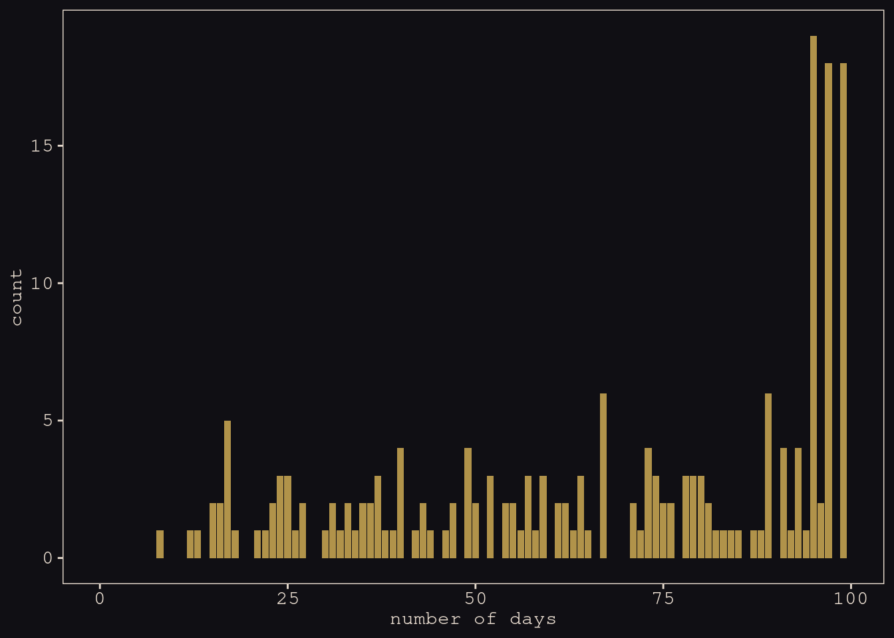
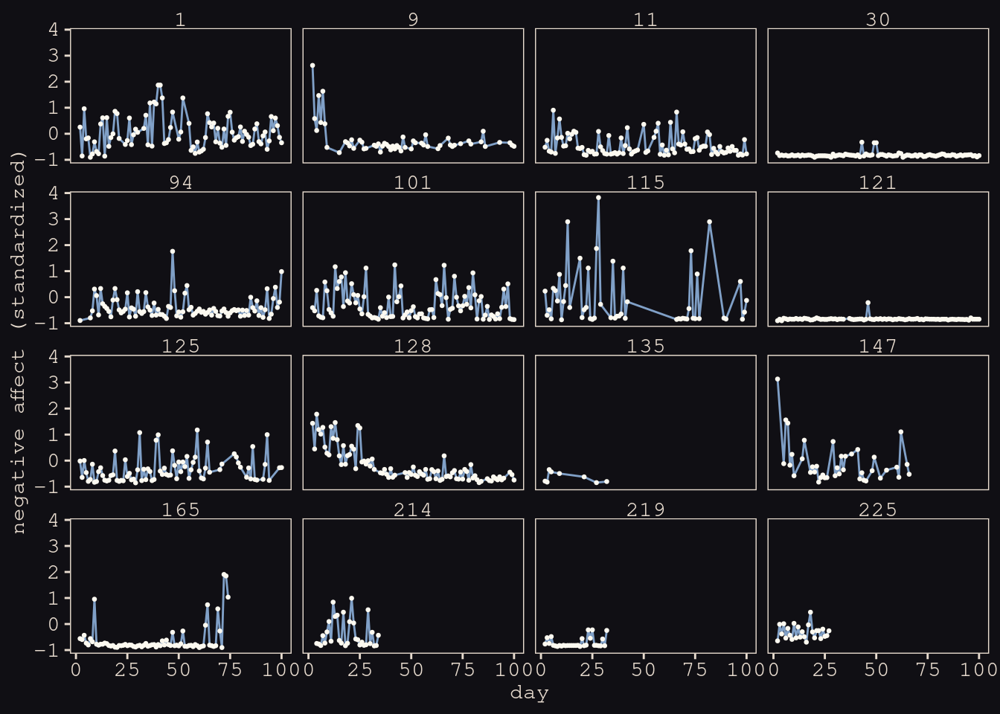

One of the two goals of this bonus section to provide a brief introduction multilevel models designed to express change over time. The particular brand of multilevel models we’ll focus on are often called multilevel growth models. Though we will focus on simple linear models, this basic framework can be generalized along many lines. The second goal is to build on our appreciation of covariance structures by introducing a class of multilevel models designed to investigate variation in variation called the mixed-effects location scale models (MELSM). For our final model, we get a little fancy and fit a multivariate MELSM.
Load the data:
dat <-
readr::read_csv("https://raw.githubusercontent.com/ASKurz/Statistical_Rethinking_with_brms_ggplot2_and_the_tidyverse_2_ed/master/data/m_melsm_dat.csv") %>%
dplyr::rename(X1 = `...1`) %>%
dplyr::mutate(day01 = (day - 2) / max((day - 2)))## New names:
## * `` -> ...1## Rows: 13033 Columns: 9## ── Column specification ────────────────────────────────────────────────────────
## Delimiter: ","
## dbl (9): ...1, P_A.std, day, P_A.lag, N_A.lag, steps.pm, steps.pmd, record_i...##
## ℹ Use `spec()` to retrieve the full column specification for this data.
## ℹ Specify the column types or set `show_col_types = FALSE` to quiet this message.glimpse(dat)## Rows: 13,033
## Columns: 10
## $ X1 <dbl> 2, 3, 4, 5, 6, 7, 8, 9, 10, 11, 12, 13, 14, 15, 16, 17, 18, …
## $ P_A.std <dbl> 1.74740876, -0.23109384, 0.34155950, 0.45664827, -0.23484069…
## $ day <dbl> 2, 3, 4, 5, 6, 7, 8, 9, 10, 11, 12, 13, 14, 15, 16, 17, 18, …
## $ P_A.lag <dbl> 0.7478597, 1.4674156, -0.3772641, 0.1286055, 0.3292090, 1.41…
## $ N_A.lag <dbl> 0.25399356, -0.85363386, 0.96144592, -0.19620339, -0.1604734…
## $ steps.pm <dbl> 0.955171, 0.955171, 0.955171, 0.955171, 0.955171, 0.955171, …
## $ steps.pmd <dbl> 0.5995578, -0.3947168, -1.5193587, -1.3442335, 0.4175970, -0…
## $ record_id <dbl> 1, 1, 1, 1, 1, 1, 1, 1, 1, 1, 1, 1, 1, 1, 1, 1, 1, 1, 1, 1, …
## $ N_A.std <dbl> -0.73357975, 0.53856559, 0.60161616, 0.27807249, 0.54674641,…
## $ day01 <dbl> 0.00000000, 0.01020408, 0.02040816, 0.03061224, 0.04081633, …These data are from 193 participants:
distinct(dat, record_id) %>%
count()## # A tibble: 1 × 1
## n
## <int>
## 1 193Participants were asked to complete self-report ratings once a day for a few months.
dat %>%
count(record_id) %>%
summarise(median = median(n),
min = min(n),
max = max(n))## # A tibble: 1 × 3
## median min max
## <int> <int> <int>
## 1 74 8 99How many days they participated in the study:
dat %>%
count(record_id) %>%
ggplot(aes(x = n)) +
geom_bar(fill = "#B1934A") +
scale_x_continuous("number of days", limits = c(0, NA)) +
theme_pearl_earring()
In this study, participants completed the PANAS (Positive and Negative Affect Schedule) once a day by endorsing the extent to which they experienced various positive (e.g., excited, inspired) and negative (e.g., upset, afraid) emotional states.
In the current data, the standardized versions of these scores are in the P_A.std and N_A.std columns, respectively.
set.seed(14)
dat %>%
nest(data = c(X1, P_A.std, day, P_A.lag, N_A.lag, steps.pm, steps.pmd, N_A.std, day01)) %>%
slice_sample(n = 16) %>%
unnest(data) %>%
ggplot(aes(x = day, y = N_A.lag)) +
geom_line(color = "#80A0C7") +
geom_point(color = "#FCF9F0", size = 1/2) +
ylab("negative affect (standardized)") +
facet_wrap(~ record_id)
14.6.2. Conventional multilevel growth model